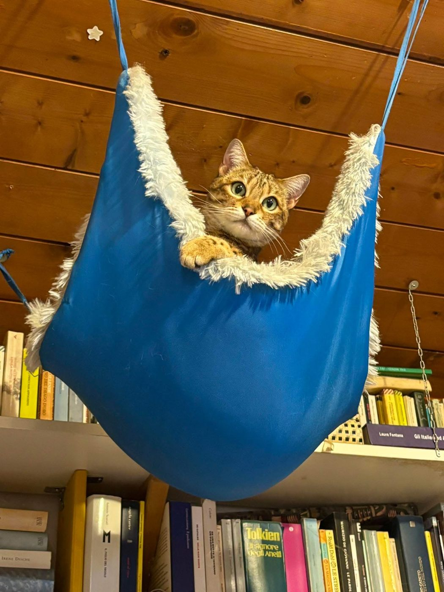

Femmina · cerca famiglia
Justwild Hawaii
Un altro splendore dall'allevamento di Sarah Levi: occhi bellissimi, orecchie piccolissime, mento forte, pancia chiara, disegno wild e coda ben attaccata e portata bassa. Una meraviglia.
Verrà sterilizzata e cerca una famiglia tutta per sé.
Data di nascita
22/05/2022
Genitori
Justwild Fiamma × Justwild Baldassar
Colore
Brown spotted
Registrazione
ANFI REG LO 2025/133 · SBT 052222 115
Consanguineità (COI)
7,8% su 4 generazioni
Test sanitari
PK-def e PRA-b negativa per discendenza